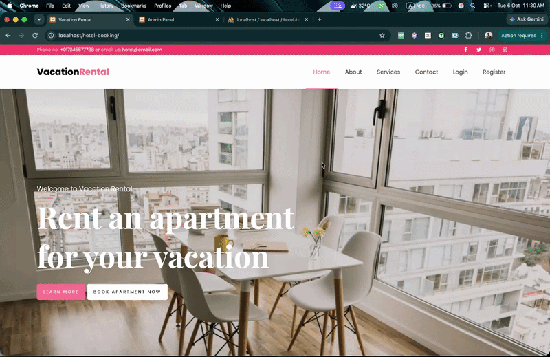

Hotel Booking System
A room-booking prototype covering property discovery, date-based requests, a simulated payment and booking administration.

Why I built it
Choosing a hotel room involves more than selecting a listing. People compare amenities, prices and stay dates, then expect a visible confirmation. Meanwhile, administrators must keep track of rooms and booking statuses. I used the problem to practise modelling a longer, connected web transaction.
Who I designed it for
Travellers browsing hotels and choosing rooms, registered guests submitting bookings, and administrators managing hotels, rooms, facilities and booking records.
The core user journey
How I approached the problem
I focused on connecting the important user tasks to working application and data flows.
Break down the journey
I mapped the path from hotel listing to room detail, stay-date selection, booking submission and confirmation.
Structure relational data
I connected hotels, rooms, room amenities, user accounts and bookings in MySQL, accessing records through PHP PDO.
Handle state changes
I used sessions and forms for guest booking actions, and a separate admin area for changes to rooms, facilities and booking statuses.
Make the demo boundary explicit
I included a simulated payment confirmation screen to demonstrate state transitions, not a live payment provider.
Why I chose this approach
A server-rendered PHP application made it possible to follow every request and database write closely. Linking rooms to hotels and amenities through relations avoids presenting disconnected data. Keeping demo payments clearly separate prevents a prototype from promising a real financial transaction.
The result, without inflated numbers
A functional local demonstration with hotel/room browsing, room details, booking records, a simulated payment step and admin management screens. No real money is collected, and the source does not establish live availability guarantees or customer conversion results.
What I learned while building
The most important lesson was to think about bookings as a sequence of states rather than individual pages. Reviewing the payment and availability flow also showed me what a production version would need: stricter booking ownership checks, overlapping-date validation and a real payment integration.
What I would improve next
Prevent conflicting bookings for overlapping dates, calculate full-stay prices reliably, enforce booking ownership on payment/status routes and integrate audited payment services.
A closer look at the project
These previews help explain the interface and flow. They are labelled honestly where fictional data or simulated behaviour is involved.